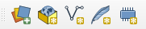

Documentation
- Les formulaires
- Les relations 1-n dans QGIS
Objectif
QGIS permet de faire de masques de saisie lors de la création ou l'édition des données : avoir des menus déroulants, des cases à cocher, des zones de textes en lecture seule...
Pour cela, nous allons réaliser une petite base de données pour de la saisie d'observations faunistiques. Nous pouvons utiliser PostgreSQL ou alors une base de données fichier comme Geopackage.
Nous allons obtenir des relations 1-n, par exemple, à une commune, nous avons plusieurs observations. De même, un observateur possède 0 ou plusieurs observations, mais une observation appartient à un seul observateur. QGIS permet de définir des relations entre les tables.
Exercice
Création des tables
Nous allons utiliser le modèle de données suivant:
- Table
especes, non spatiale- ID
- Nom commun :
nom_commun - Nom scientifique :
nom_scientifique - Autres champs métiers possibles : Taxref, page Wikipédia, photo etc
- Table
observateurs, non spatiale- ID
- Nom :
nom - Prénom :
prenom
- Une table des communes ou département avec un code INSEE, polygonale
- Table
observations, géométrie ponctuelle- ID
- Date :
date - Espèce :
espece_id, pour stocker l'identifiant de l'espèce - Observateur :
observateur_id, poru stocker l'identifiant de l'observateur - Genre (liste fermé) :
genre - Nombre :
nombre - En groupe :
en_groupe, type booléen - Photo :
photo - Remarque :
remarque
Pour la création des tables :
-
Dans le cas de l'utilisation d'un Geopackage :
- 
- Il y a déjà le champ
fidqui fait office de clé primaire. - Astuce pour la création des champs :
- créer juste le premier champ dans la boite de dialogue de création de couche. Nous utiliserons les outils dans le
panneau
Table attributairepour ajouter les autres attributs. Il y a plus de choix.
- créer juste le premier champ dans la boite de dialogue de création de couche. Nous utiliserons les outils dans le
panneau
-
Dans le cas de l'utilisation de PostGIS :
- Utiliser l'assistant de création de table du DB Manager
- Ou alors du SQL !
Création des relations
Menu Projet ▶ Propriétés ▶ Relations, nous pouvons créer ici les relations 1-n entre les tables.
Par convention personnel, je nomme les relations suivant le modèle parent_enfant, par exemple commune_observation.
Création des formulaires
Dans les propriétés de la couche vecteur en question, onglet Formulaire d'attributs:
- Couche
observateurs:- Mode formulaire :
Génération automatique - Mettre un alias sur les champs, language humain
- Mettre le bon outil d'édition pour les champs :
cachéeoutexte - Mettre les contraintes et les renforcer
- Mode formulaire :
- Couche
especes:- Même mode de formulaire
- Alias
- Configurer aussi l'outil d'édition, avec l'unicité sur le nom de l'espèce
- Bonus : utiliser une expression pour vérifier que la première lettre est bien une majuscule.
regexp_match( left("nom_commun", 1), '[A-Z]')
- Couche
observations:- Bonus : une expression pour la date pour éviter une saisie dans le futur
Les champs virtuels
Sur la couche communes, on peut ajouter un champ virtuel afin de compter le nombre d'observations par commune :
relation_aggregate(
relation:='observation_commune',
aggregate:='count',
expression:="fid"
)
Bonus, on peut ajouter une mise en forme conditionnelle

Rouge si
@value = minimum( "obs" )
Vert si
@value = maximum( "obs" )
Solution complète
TODO, mettre le lien vers le geopackage https://github.com/Gustry/formation-qgis/raw/master/formulaire.gpkg
Depuis QGIS ▶ Ouvrir depuis... ▶ Geopackage